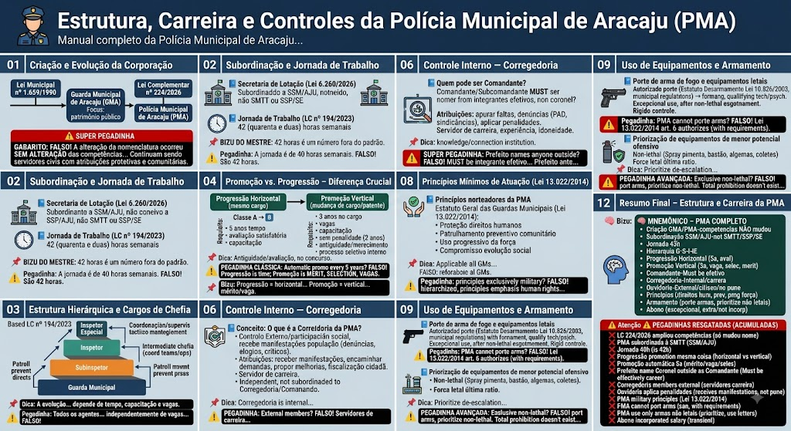

Material de estudo: Estrutura, Carreira e Controles da Polícia Municipal de Aracaju (PMA)
Material complementar · Ver fonte no GitHub
Criação e Evolução da Corporação
Lei Municipal nº 1.659/1990
Instituiu a Guarda Municipal de Aracaju (GMA), determinando suas atribuições originais, focadas primordialmente no zelo ao patrimônio público.
Lei Complementar nº 224/2026
Alterou a nomenclatura de Guarda Municipal de Aracaju (GMA) para Polícia Municipal de Aracaju (PMA).
🚨 SUPER PEGADINHA
O examinador pode afirmar: 'A LC nº 224/2026 alterou o nome para Polícia Municipal e, com isso, ampliou suas competências para incluir ações de polícia judiciária militar e alterou sua estrutura funcional para assemelhar-se à PMSE.'
GABARITO: FALSO! A alteração da nomenclatura ocorreu SEM ALTERAÇÃO das competências e da estrutura funcional. Continuam sendo servidores civis com atribuições protetivas e comunitárias.
Subordinação e Jornada de Trabalho
Secretaria de Lotação (Lei 6.260/2026)
A Polícia Municipal/Guarda Municipal é subordinada à Secretaria de Segurança Municipal e Cidadania de Aracaju (SSM/AJU). NÃO é vinculada à SMTT nem diretamente à SSP/SE.
Jornada de Trabalho (LC nº 194/2023)
Define a jornada de trabalho padrão de 42 (quarenta e duas) horas semanais, podendo ser adotado sistema de escalas (plantão) para atender ao interesse público (ex.: 12x36 ou 24x72).
📌 BIZU DO MESTRE: 42 horas é um número fora do padrão (44h do setor privado ou 40h do servidor comum). Circule esse número no seu resumo!
⚠️ Pegadinha: A banca pode afirmar que a jornada é de 40 horas semanais. FALSO! São 42 horas.
Estrutura Hierárquica e Cargos de Chefia
Escada hierárquica da PMA (LC nº 194/2023)
A estrutura de carreira da PMA é dividida em níveis, da base ao topo:
- Guarda Municipal – cargo inicial, de nível médio (ou superior, conforme edital). Execução direta do patrulhamento preventivo.
- Subinspetor (1ª classe) – primeiro cargo de chefia intermediária, exige nível superior completo. Coordenação de equipes e supervisão operacional.
- Inspetor – cargo de coordenação e supervisão. Gestão de unidades e planejamento tático.
- Inspetor Especial – cargo de alta chefia e gestão estratégica. Comando geral da corporação.
📌 Dica: A evolução da carreira não é automática – depende de requisitos como tempo de serviço, capacitação e disponibilidade de vagas.
⚠️ Pegadinha: Afirmação errada: 'Todos os agentes da PMA podem chegar a Inspetor Especial independentemente de vagas ou qualificação.' FALSO! A carreira tem vagas limitadas e exige qualificação específica para cada nível.
Promoção vs. Progressão – Diferença Crucial
Progressão Horizontal (mesmo cargo)
Ocorre dentro do mesmo cargo, com avanço de nível ou referência salarial (ex.: Guarda Municipal Classe A → Classe B).
Requisitos:
- Tempo de serviço mínimo: a cada 5 (cinco) anos de efetivo exercício;
- Avaliação de desempenho com conceito satisfatório;
- Cumprimento de carga horária de capacitação.
📌 Dica: A progressão é por antiguidade e avaliação, não depende de concurso interno.
Promoção Vertical (mudança de cargo/patente)
É a mudança de cargo/patente (ex.: Guarda → Subinspetor, Subinspetor → Inspetor).
Requisitos:
- Estar há pelo menos 3 (três) anos no cargo atual;
- Disponibilidade de vagas (não é automática);
- Conclusão de cursos de capacitação/aperfeiçoamento (ex.: Curso de Formação de Supervisores);
- Não ter sofrido penalidade disciplinar nos últimos 2 (dois) anos;
- Análise por antiguidade ou merecimento;
- Ser aprovado em processo seletivo interno (prova ou análise de currículo).
⚠️ PEGADINHA CLÁSSICA:
❌ 'A promoção vertical ocorre automaticamente a cada 5 anos.' FALSO! A progressão (horizontal) é por tempo. A promoção (vertical) exige MÉRITO, SELEÇÃO E VAGA DISPONÍVEL, não é automática.
📌 Bizu: Progressão = horizontal (mesma função, avança em nível por tempo). Promoção = vertical (sobe de cargo/patente, exige mérito e vaga).
Regra de Ouro: Comando e Subcomando
Quem pode ser Comandante?
O Comandante e o Subcomandante da PMA devem ser nomeados dentre os integrantes efetivos do quadro de carreira da própria instituição. NÃO podem ser escolhidos de fora (ex.: Coronel da PM aposentado).
Requisitos adicionais:
- Pertencer ao último nível da carreira (Inspetor Especial ou equivalente);
- Ter experiência comprovada em gestão e segurança pública;
- Atender às exigências do Plano de Carreira (LC 194/2023).
📌 Dica: A regra garante que o comando seja exercido por quem conhece a realidade da corporação e tem vínculo efetivo com a instituição.
⚠️ SUPER PEGADINHA:
❌ 'O Prefeito pode nomear qualquer cidadão de fora, com notório saber, para ser o Comandante da PMA.' FALSO! O Comandante deve ser, obrigatoriamente, integrante efetivo do quadro de carreira da corporação.
Controle Interno — Corregedoria
O que é a Corregedoria da PMA?
A Corregedoria é o órgão de controle interno da Polícia Municipal, responsável por apurar infrações disciplinares cometidas pelos agentes da corporação, garantindo a regularidade do serviço e a integridade da instituição.
Principais atribuições:
- Apurar faltas disciplinares (art. 42 da Lei 8.112/90, aplicável subsidiariamente).
- Receber denúncias internas e externas contra agentes.
- Instaurar Processos Administrativos Disciplinares (PAD) e Sindicâncias.
- Aplicar penalidades administrativas (advertência, suspensão, demissão).
Requisito: O Corregedor deve ser um servidor de carreira da corporação, com experiência e idoneidade comprovada.
📌 Dica: A Corregedoria é interna — seus membros pertencem à própria estrutura da PMA.
⚠️ PEGADINHA: Afirmação errada: 'A Corregedoria da PMA é composta por membros externos, indicados pelo Prefeito, sem vínculo com a corporação.' FALSO! A Corregedoria é composta por servidores de carreira da própria corporação, não por agentes externos.
Controle Externo — Ouvidoria
O que é a Ouvidoria da PMA?
A Ouvidoria é o órgão de controle externo e de participação social, responsável por receber, apurar e encaminhar reclamações, denúncias, sugestões e elogios da população sobre o serviço prestado pela Polícia Municipal.
Principais atribuições:
- Receber manifestações da sociedade (denúncias, elogios, críticas).
- Encaminhar as demandas aos órgãos competentes.
- Propor melhorias na prestação do serviço.
- Garantir o direito do cidadão de fiscalizar a atuação da corporação.
Característica: A Ouvidoria atua de forma independente e imparcial, sem subordinação direta à Corregedoria ou ao comando da PMA.
📌 Dica: A Ouvidoria é o canal do cidadão para dialogar com a corporação — diferente da Corregedoria, que é interna.
⚠️ PEGADINHA: Afirmação errada: 'A Ouvidoria da PMA é um órgão exclusivamente punitivo, que aplica penalidades aos agentes.' FALSO! A Ouvidoria não pune — ela recebe manifestações e as encaminha. A punição cabe à Corregedoria ou à administração.
Princípios Mínimos de Atuação (Lei 13.022/2014)
Princípios norteadores da PMA
A atuação da Polícia Municipal é guiada pelos princípios do Estatuto Geral das Guardas Municipais (Lei 13.022/2014), aplicáveis a Aracaju:
- Proteção dos direitos humanos — respeito à dignidade da pessoa.
- Patrulhamento preventivo e comunitário — atuação próxima à comunidade, com foco na prevenção.
- Uso progressivo da força — utilização gradual e proporcional, de acordo com a reação do infrator.
- Compromisso com a evolução social — adaptação às demandas da sociedade e melhoria contínua.
📌 Dica: Esses princípios são aplicáveis a todas as guardas municipais do Brasil, não só a Aracaju, e estão na lei federal.
⚠️ Pegadinha: A banca pode afirmar que a PMA atua com princípios exclusivamente militares, como hierarquia rígida e disciplina castrense. FALSO! Embora haja hierarquia, os princípios são os da Lei 13.022/2014, com ênfase em direitos humanos e comunidade.
Uso de Equipamentos e Armamento
Porte de arma de fogo e equipamentos letais
A PMA, como instituição de segurança municipal, pode autorizar o porte de arma de fogo a seus agentes, observadas as normas do Estatuto do Desarmamento (Lei 10.826/2003) e a regulamentação municipal.
Regras gerais:
- O porte é autorizado mediante treinamento, qualificação técnica e psicológica.
- O uso da arma de fogo é excepcional, sempre após o esgotamento de meios não letais.
- A corporação deve manter controle rigoroso do armamento.
⚠️ Pegadinha: A banca pode afirmar que a PMA não pode portar armas de fogo, por ser uma guarda municipal. FALSO! A Lei 13.022/2014, art. 6º, autoriza o porte de armas de fogo, desde que cumpridos os requisitos legais.
Priorização de equipamentos de menor potencial ofensivo
A Lei 13.022/2014 e a regulamentação local incentivam o uso de equipamentos de menor potencial ofensivo (não letais), como:
- Spray de pimenta (gás de pimenta).
- Bastão de contenção.
- Algemas (instrumento de contenção, não armamento).
- Equipamentos de proteção (coletes, capacetes).
Regra: O uso de força letal é última ratio, somente quando absolutamente necessário para proteção da vida do agente ou de terceiros.
📌 Dica: A PMA deve priorizar a desescalada do conflito, utilizando meios não letais sempre que possível.
⚠️ PEGADINHA AVANÇADA: Afirmação errada: 'A PMA utiliza exclusivamente armas não letais, estando proibida de portar qualquer tipo de arma de fogo.' FALSO! A corporação pode portar armas de fogo, mas prioriza o uso de equipamentos não letais. A vedação total não existe na legislação.
Vantagem Operacional – Abono por Encargo Excepcional
O que é o Abono por Encargo Excepcional?
É uma gratificação paga ao agente da PMA que é convocado pelo Comando para realizar atividades fora da sua escala ordinária, para atender a situações excepcionais de interesse público.
Características:
- É uma remuneração extra, não incorporada ao salário base;
- Não gera direito adquirido;
- O valor e as condições são definidos em regulamento municipal.
Exemplo: Um agente é chamado em seu dia de folga para reforçar a segurança em um grande evento municipal – recebe o abono.
⚠️ Pegadinha: A banca pode afirmar que o abono é incorporado ao salário. FALSO! É uma verba transitória, sem incorporação.
Principais Atribuições Operacionais
Atribuições cobradas em prova
- Zelar por bens, praças, parques e instalações da Prefeitura;
- Promover a segurança nos terminais de transporte coletivo urbano de Aracaju;
- Prestar socorro em casos de calamidade pública e emergência (Defesa Civil);
- Realizar a segurança pessoal do Prefeito e de dignatários em visita oficial.
📌 Dica: A PMA atua na prevenção e proteção, nunca em investigação criminal ou policiamento ostensivo repressivo (isso é função das polícias Civil e Militar).
Resumo Final – Estrutura e Carreira da PMA
🧠 MNEMÔNICO – PMA COMPLETO
📌 Criação: Lei 1.659/1990 (GMA) → LC 224/2026 (PMA) – nome mudou, competências NÃO.
📌 Subordinação: SSM/AJU (NÃO é SMTT, NÃO é SSP/SE).
📌 Jornada: 42 horas semanais (exceção! não é 40 nem 44).
📌 Hierarquia: Guarda → Subinspetor → Inspetor → Inspetor Especial (G-S-I-IE).
📌 Progressão (horizontal): mesmo cargo, avança por tempo (5 anos) e avaliação.
📌 Promoção (vertical): muda de cargo, exige 3 anos no cargo, vaga, capacitação, mérito e seleção.
📌 Comandante: deve ser efetivo da carreira (não pode ser de fora).
📌 Corregedoria: controle interno, servidor de carreira.
📌 Ouvidoria: controle externo, canal do cidadão, não pune.
📌 Princípios: direitos humanos, preventivo, uso progressivo da força, evolução social.
📌 Armamento: pode portar arma de fogo (com requisitos), mas prioriza equipamentos não letais.
📌 Abono: encargo excepcional, fora da escala, não incorpora.
⚠️ PEGADINHAS RESGATADAS (ACUMULADAS)
❌ 'A LC 224/2026 ampliou competências da PMA.' → ERRADO (só mudou o nome).
❌ 'A PMA é subordinada à SMTT.' → ERRADO (é SSM/AJU).
❌ 'A jornada é de 40 horas semanais.' → ERRADO (é 42h).
❌ 'Progressão e promoção são a mesma coisa.' → ERRADO (horizontal vs vertical).
❌ 'Promoção é automática a cada 5 anos.' → ERRADO (exige mérito, vaga e seleção).
❌ 'O Prefeito pode nomear um Coronel aposentado como Comandante.' → ERRADO (deve ser efetivo da PMA).
❌ 'A Corregedoria é composta por membros externos.' → ERRADO (servidores de carreira).
❌ 'A Ouvidoria aplica penalidades.' → ERRADO (recebe manifestações, não pune).
❌ 'A PMA atua com princípios exclusivamente militares.' → ERRADO (princípios da Lei 13.022/2014).
❌ 'A PMA não pode portar armas de fogo.' → ERRADO (pode, com requisitos).
❌ 'A PMA usa apenas armas não letais.' → ERRADO (prioriza, mas pode usar letais).
❌ 'O abono por encargo excepcional incorpora ao salário.' → ERRADO (é transitório).
Mapa-mental
